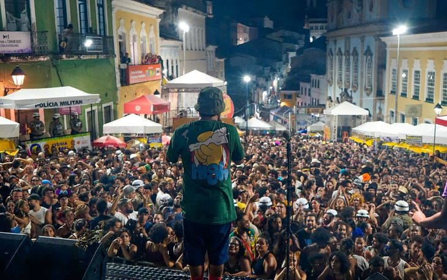
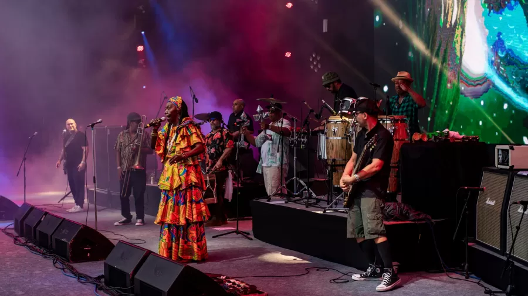
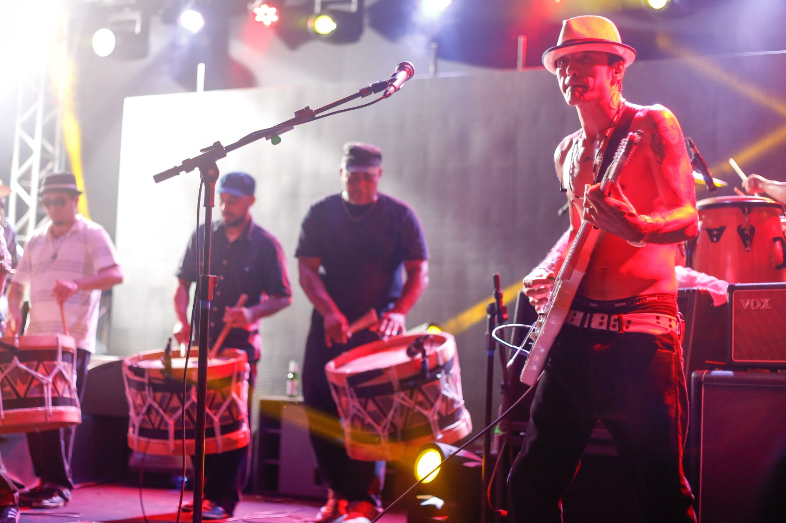
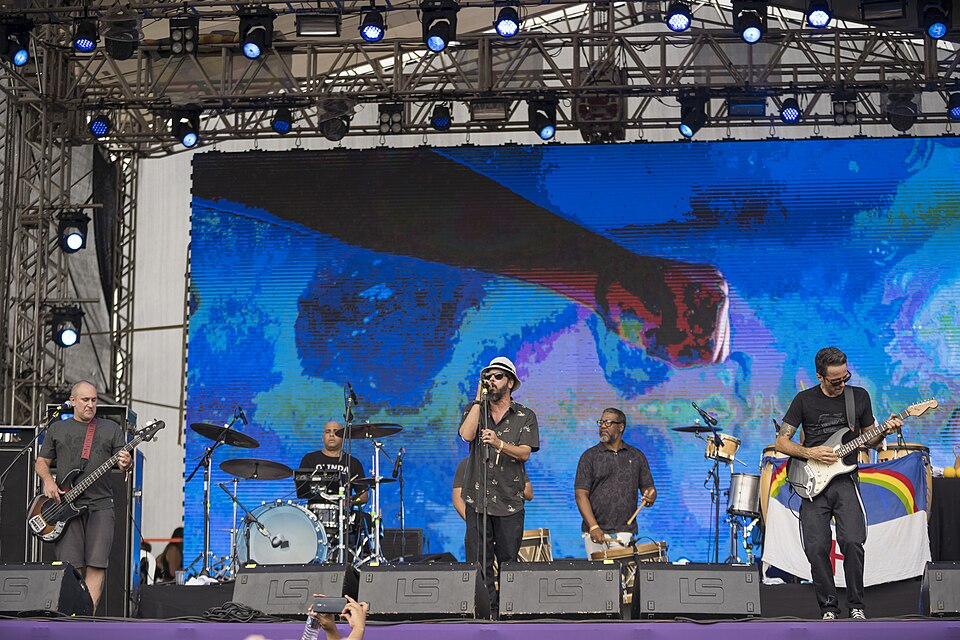
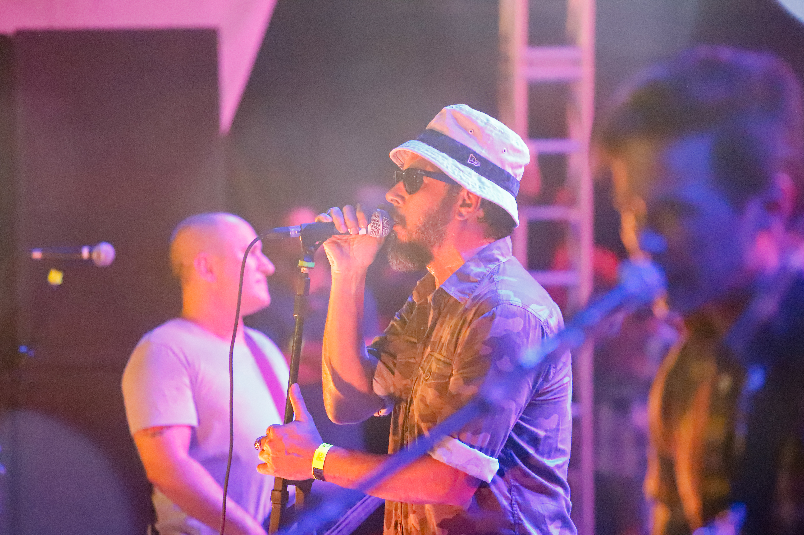
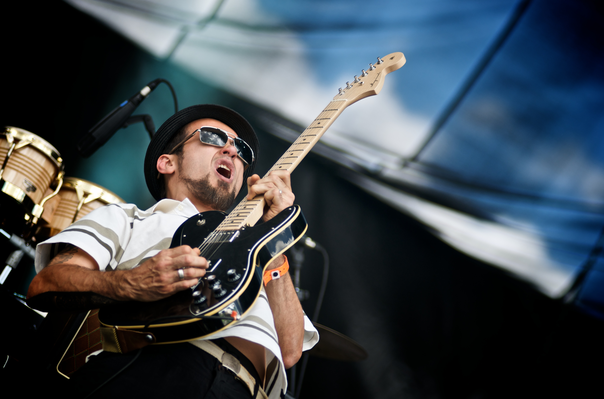

REGISTROS • AO VIVO
O SOM
EM IMAGENS.
No palco, no meio da multidão e longe do silêncio. Alguns registros da trajetória da Nação Zumbi.






REGISTRO EM VÍDEO
BOSSA NOSTRA.
O som da Nação Zumbi também ganha força na imagem. Assista ao clipe e confira essa mistura de ritmos.
NAÇÃO ZUMBI • CLIPE OFICIAL
Se o vídeo não carregar, assista pelo YouTube.